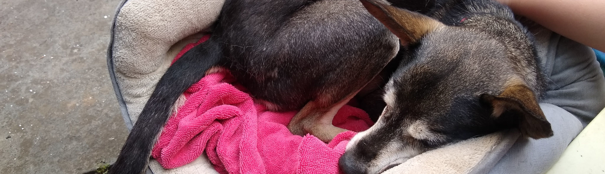

Dog Aging

Questions
As organisms age, their bodies begin to deteriorate at multiple levels from the cell to whole organ systems. Aging is one of the biggest risk factors for a wide range of diseases and for overall mortality. Dogs are an interesting and important model for studying aging; they live in similar environments to humans, are afflicted by a variety of age-related conditions, and the heterogeneity of dogs provides variability in their aging trajectories. To be able to study dog aging, we need to be able to understand the patterns of age-related changes in various aspects of dogs' health, how they are related to one another, and their relationship to demographic variables.
Methods
I am studying early signs of dog aging by tracking dogs over the course of a year. We are combining various health measures including physical exams, gait evaluations, cognitive tasks, and owner questionnaires. We hope to develop a battery for assessing dogs' health status that can predict their future aging trajectories.
- Margaret Gruen
- Natasha Olby
- Sera Hill
- Emily Griffith
- Mateo Suarez Koch
Collaborators
This research is funded in part by Royal Canin.